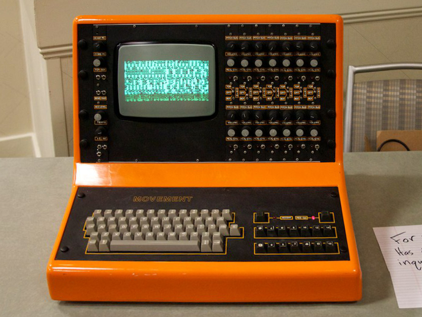

Movement Systems (MCS) Drum Computer (1981)
A drum machine that IS a microcomputer — you type your rhythms on a QWERTY keyboard and read them on a CRT

Overview
The Movement Computer Systems (MCS) Drum Computer — also called the Percussion Computer — is a very rare British drum machine from around 1981, designed by John Dickenson (concept) and Dave Goodway (electronics). Only about thirty units were built across the MK1 and MK2 models. It is built around a Nascom 2 single-board microcomputer, which makes it structurally different from contemporary drum machines: rather than step buttons and LED grids, the sequencing interface is a full QWERTY keyboard and a monochrome CRT display on which drum patterns are graphically edited.
The instrument hybridizes two sound-generation approaches across seven voice cards, each carrying two drum voices (14 total). Each voice can be switched between an analog synthesized drum sound (Simmons-style) and a digital 8-bit sampled sound (LinnDrum-style), with per-voice volume and pitch-sustain controls. Sequenced patterns can be chained into songs, and data can be saved to cassette tape. Later MK2 units (1983) added MIDI, an integrated CRT, battery-backed memory, and a floppy disk drive.
The MCS's most prominent user was David Stewart of the Eurythmics, who is seen typing on an MK1 in the video for "Sweet Dreams." Other users reportedly included Phil Collins, the Thompson Twins, the Human League, Thomas Dolby, and Vince Clarke — some accounts say the same physical machine passed from one act to the next. Despite this pedigree, it never sounded as good as the Linn, Simmons, or Oberheim competition and did not take off commercially.
Deep dive
The MCS's defining inversion is that the sequencer is a general-purpose microcomputer. Inside is a Nascom 2 single-board computer, and the operator programs rhythms by typing on a QWERTY keyboard while watching a monochrome CRT that graphically shows the drum-note pattern across a grid of voices and steps. This is the drum machine as a programming environment — a decade before software-defined instruments became normal.
Across 14 voices the MCS blends two sound-generation philosophies: analog synthesized drum voices (Simmons-style) and digital 8-bit samples (LinnDrum-style). Each voice can be switched between the two, giving a single instrument the texture of both the analog and early-digital drum machine eras at once.
David Stewart of the Eurythmics used the MCS on "Sweet Dreams" and is seen typing at an MK1 keyboard in the video. The same machine reportedly circulated through Phil Collins, the Thompson Twins, the Human League, and Thomas Dolby. An extraordinarily rare instrument with a disproportionate celebrity footprint.
Team & pioneers
- Movement Computer Systems British company that produced the Drum Computer (c. 1981)
- John Dickenson concept/design of the MCS Drum Computer
- Dave Goodway electronics design of the MCS Drum Computer